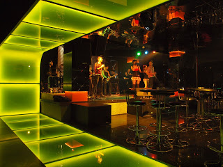

WUZZ UP MY PLACE !
Is Always Be Your Place
Completed with 9 deluxe room and 2 suite karaoke room, My Place gave a new breeze of entertainment concept. My Place karaoke will indulge you with wide selection of music, comfortable room which are design differently, careful selection of Food & Beverage menus as well as room amenities.

{kind=link}
At My Place bar, you will enjoy most everything that people visit a nightclub for (the great vibe, good music, drinks, and, of course, plenty of good looking women dancing on the floor), but typically won’t have to deal with the headaches of the long lines, packed bars, and over-crowded spaces that you often find at a larger nightclub.
Balancing the nightlife experience, My Place could be also experienced at daylight. As we are open for lunch, My chef has already prepared his best "Culinary Break" which is ready to addict you with its delicious temptation. My sexy roll, dragon dance and lucky triangle are must food to try instead of our perfect cup of java and tea. To warm up the night, My Signature cocktail will make you struggle to lower down the beat.
My home band, One Vision from Jakarta and the two resident DJ's; Aan and Yeffie are on its positions to bring the fire to the house. 200 pax capacity with an asian modern interior design, My Place is a unique yet fully entertaining venue, even for lunch meeting, gatherin an other semi formal occasion. LED Screen, professional lighting and super fine quality of sund system are what we have to make ANY event meet its functions.
So, be here and enjoy the sensations,
coz My Place.. is your place..!